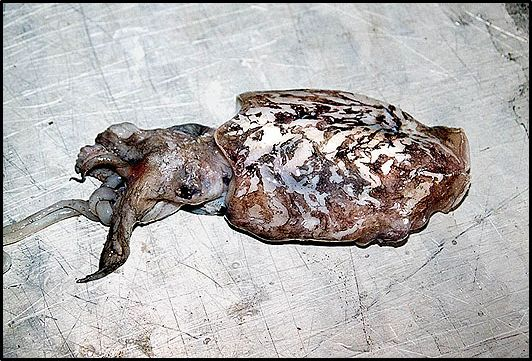

- Χταπόδι (octapus vulgaris)
Το συναντάμε στα βράχια σε ακρογιαλιές, μέσα σε θαλάμια και σε ομαλούς βυθούς. Όταν κινδυνεύει για να αποφύγει τον εχθρό βγάζει μελάνι θολώνοντας το νερό. Ψαρεύεται από τον Νοέμβριο μέχρι το Δεκέμβριο.
- Σουπιά (sephia officinalis)
Κινείται σε κοπάδια και καμουφλάρεται όπως το χταπόδι όταν κινδυνεύει, με το μελάνι που αφήνει. Ψαρεύεται νύχτα τον χειμώνα από τον Ιανουάριο μέχρι τον Μάρτιο.
- Μύδια
Τα μύδια προτιμάνε τα ήσυχα, θολά νερά, κοντά στις εκβολές ποταμών και στα μικρά λιμάνια. Σε ορισμένες περιοχές σχηματίζουν αποικίες. Τα μύδια τρέφονται καταναλώνοντας πλαγκτόν φιλτράροντας το νερό της θάλασσας.
